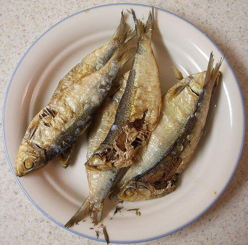
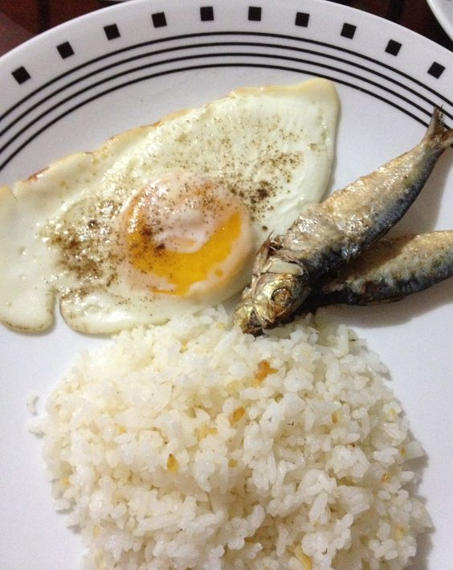
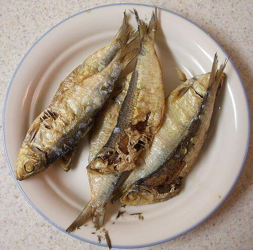
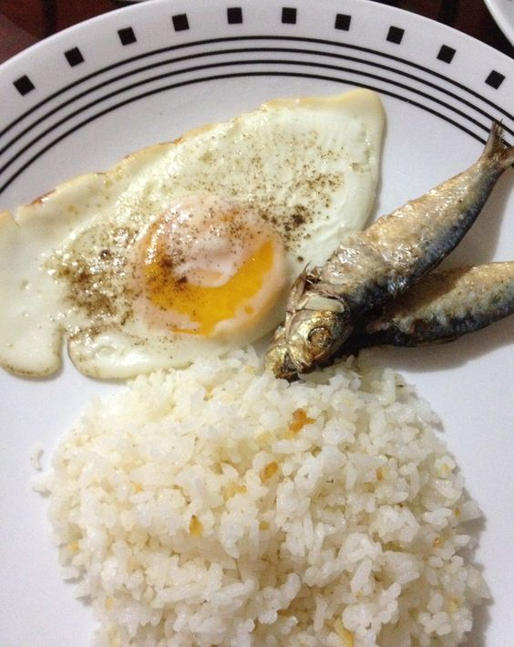

Sa Pilipinas, isa sa mga pinakapaboritong almusal ng mga Pinoy ay ang tinatawag na "tuyo." Ito ay isang sikat
na pagkaing tuyo o tuyô, na gawa sa asinang-dried na isda, kadalasang danggit, sapsap, dilis, o galunggong.
Ang salitang "tuyo" ay nangangahulugang "tuyo" o "tuyong tuyo" sa Tagalog, na nagsasaad na ang isda ay
pinatuyo upang maging matigas at maalat.
Ang tuyo ay isang simpleng pagkaing Pinoy na nagluluto sa tuwing umaga. Ito ay isang popular na pagkain na
madalas kasama sa almusal ng maraming mga pamilya, lalo na sa mga probinsya at sa mga nasa urbanong lugar.
Kahit na may iba't ibang mga pagkaing umuusbong, hindi nawawala ang tuyo bilang isa sa mga kinahihiligan ng
mga Pinoy.
Ang tuyo ay madalas na inuulam kasama ng mainit na kanin, kamatis, at itlog. Isang sikat na paraan ng
pagluluto nito ay sa pamamagitan ng pagprito sa mantika hanggang sa maging malutong at ginto ang kulay. Ang
lasa ng tuyo ay karaniwang maalat at mayroon itong malakas na amoy, na kung minsan ay nagiging pangkalahatan
sa loob ng bahay. Ngunit bagaman medyo matapang ang lasa nito, maraming mga Pinoy ang nagpapahanga sa simpleng
subo nito, at ito ang nagbibigay ng isang karakteristikong pagkain sa mga Pinoy.
Ang tuyo ay hindi lamang basta isang simpleng pagkain, ito ay sumisimbolo rin ng pagiging matipid at praktikal
ng mga Pinoy. Dahil ito ay isang dehydrated na isda, ang tuyo ay may mahabang buhay na puwedeng itago, kaya't
maraming mga pamilya ang nagtatago nito bilang isang pang-reserba o emergency food. Ito rin ay isang
abot-kayang pagkain, na mabibili sa murang halaga at madaling hanapin sa mga pamilihan.
Sa pagdating ng umaga, ang bango ng tuyo na niluluto sa kawali ay kumakalat sa buong bahay, na nagiging tanda
ng paparating na masarap na almusal. Ito ay isang pagkain na nagbibigay ng malasang unang lasa ng umaga,
kasabay ng pagiging maalat at sinasamahan ng asim ng kamatis. Ang lasang ito ay nagpapaalala sa atin ng
kulturang Pinoy at sa kung paano natin pinahahalagahan ang simpleng kasiyahan sa pamamagitan ng pagkain.
Ang tuyo ay hindi lamang isang pagkaing Pinoy, ito ay isang bahagi ng ating kasaysayan, kultura, at
pagka-Pinoy. Ito ay patunay na hindi kailangang magkaroon ng mamahaling pagkain upang maramdaman natin ang
kaligayahan at kasiyahan. Sa tuyo, tinutukoy natin ang pagiging praktikal, masayahin, at may malasakit sa
ating mga ugali.
Sa huli, ang tuyo ay isang simbolo ng pagiging Pinoy sa pagkain. Ito ay nagpapaalala sa atin na masarap
mabuhay ng simple at masiyahan sa mga bagay na maaaring wala sa ibang kultura. Sa tuyo, hindi lamang tayo
kumakain, kundi tayo rin ay nagpapahiwatig ng ating pagkakakilanlan at pagmamahal sa ating mga pinanggalingan.
Kaya sa susunod na pagkakataon na kakain ka ng tuyo, alalahanin mo ang mga bagay na ito at maranasan mo ang
kahulugan at lasa ng pagiging tunay na Pinoy.
Tuyo: Ang malinamnam na almusal ng mg Pinoy
 


